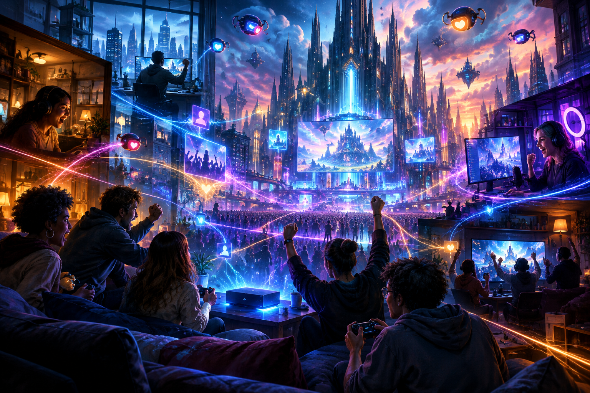

Breaking the Record: How GTA VI's Historic Launch Reshaped Gaming Culture in 2026
Grand Theft Auto VI set records with its release, but its true legacy may be the deep and lasting changes it introduced to gaming culture, player habits, and industry standards worldwide.
READ THE STORY ↗
Small But Mighty: How NVIDIA’s RTX Spark Platform is Powering the Next Generation of Compact Gaming PCs
From dorm rooms to desk spaces, the RTX Spark revolution is bringing desktop-class performance and advanced AI to PCs smaller than ever—changing the very shape of what it means to game on the PC in 2026.
READ THE STORY ↗
The Generative Game Master: Exploring AI’s Role and Limits in Shaping MMORPG Worlds
With leading publishers touting generative AI as the key to boundless, living MMORPG universes, 2026 is the year the genre confronts both the risks and promises of algorithm-driven design. As more studios embrace procedural content and dynamic storyweaving, where is the boundary between automated creativity and the essence of player-driven adventure?
READ THE STORY ↗
Speaking Worlds Into Being: The Rise of Adaptive Dialogue Systems in RPGs
As role-playing games embrace machine learning and adaptive AI, dialogue systems are transforming from rigid branching trees into immersive, world-shaping conversations. Explore how these advances are changing what it means to talk, listen, and shape the world in modern RPGs.
READ THE STORY ↗
Beyond the Controller: How Innovative In-Game Communication Tools Are Transforming Console Co-Op
Console co-op is being redefined not just by gameplay, but by the rise of creative, inclusive, and game-specific communication features designed for couch and online players alike.
READ THE STORY ↗